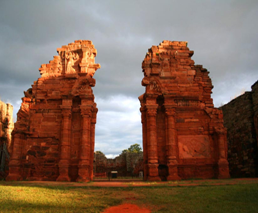

Nueva App para Turismo
20 de Mayo de 2019
perm_contact_calendar
Desarrollo gratuito para ANDROID

Utilizando la experiencia en desarrollo web, hemos desarrollado desde el area de comunicaciones una App para móviles, que ser´ presentada en la sala del Consejo superior de nuestra Universidad el día 20 de Mayo de 2019. Esta aplicación permitirá al usuario acceso a mapas interactivos con datos de hoteles, puntos turísticos, transporte etc. El equipo trabaja intensamente en el desarrollo de una segunda versión con novedades importantes. Utilizando la experiencia en desarrollo web, hemos desarrollado desde el area de comunicaciones una App para móviles, que ser´ presentada en la sala del Consejo superior de nuestra Universidad el día 20 de Mayo de 2019. Esta aplicación permitirá al usuario acceso a mapas interactivos con datos de hoteles, puntos turísticos, transporte etc. El equipo trabaja intensamente en el desarrollo de una segunda versión con novedades importantes.
account_circle
Julio Cesar Bobadilla. Diploma en Nuevas Tecnologías Aplicadas a la Educación de la FLACSO, actualmente Lider del Area de Comunicaciones del Plograma Unam Transmedia de la Universidad Nacional de Misiones. El equipo de trabajo tiene otros tres integrantes que colaboran en el desarrollo de esta Aplicación que será un exito.